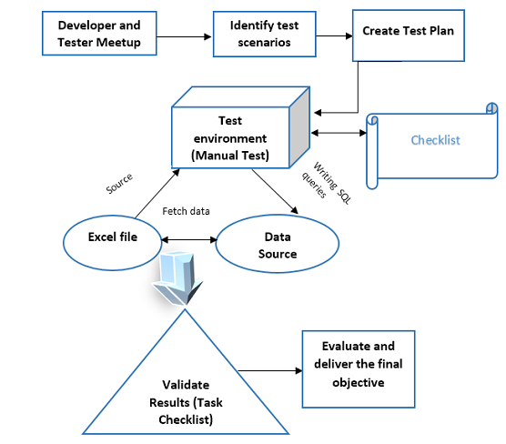

Home / Methodology / How We Evaluate Products
How We Evaluate Products
Our process from first question to final verdict, explained step by step, including what we do not claim.
Last updated September 30, 2026
Why we explain our process
Anyone can write "we tested it". It costs nothing to say, and readers have learned to be careful with it. So instead of making big claims, we would rather show you exactly how an article on Ranking Hours is put together, step by step, so that you can judge for yourself whether to trust it.
This page describes our editorial process, from the first question to the final sentence. It is honest about its limits. We are a small editorial website. We are not a testing facility, and we do not say that every product on the site was physically tested by us. What we promise is a careful, consistent method for turning public information into a clear comparison, and a clear line between what is known and what is guessed.
If you read only one line of this page, read this one: when we do not know something, we say so.
What "evaluation" means here
The word "testing" can mislead, so we use it carefully. In our work there are three different activities, and we try never to blur them.
- Research. Collecting and reading maker documents, published specifications, standards, support pages and independent measurements.
- Analysis. Comparing the facts against each other and against real situations, such as a student commute, a family kitchen or a gaming desk.
- Hands-on testing. Using a product ourselves or measuring it with instruments. We describe this only when it really happened, and we say what was done.
Most of our guides rest on the first two. They are useful because choosing a product is mostly about understanding trade-offs, and good analysis of public information can do that well. But they are not hands-on tests, and we do not dress them up as such. You can find more about measurement itself on our measurement standards page.
Step one: define the question
Every article starts with a question that a real buyer might ask. "Which of these two laptops is better?" is too vague. "Which suits a student who carries the laptop every day and has a modest budget?" is better.
We write down four things before we collect any facts:
- Which products or product types are being compared, and which versions.
- Who the reader probably is and what they want to do.
- Which questions this reader will ask, in order of importance.
- What the article will not cover, so that we do not stretch beyond what we can support.
This step is quick, but it prevents the most common failure in comparison pages, which is a long list of specifications that never answers any question.
Step two: collect the evidence
Next we gather information. We sort sources into rough levels of trust, and we use them in this order.
| Source type | Good for | Careful about |
|---|---|---|
| Maker documentation and manuals | Dimensions, ports, supported standards, official limits | Performance claims chosen by the maker |
| Standards and regulatory information | Safety marks, energy labels, test cycles | Differences between regions and test methods |
| Independent measurements | Battery, brightness, noise, speed | Method, settings, software version, sample variation |
| Official support pages | Update policy, known issues, warranty terms | Pages that change or differ by country |
| Owner experience over time | Durability, common faults, service quality | Small samples, strong opinions, unverified posts |
| Retail listings | Which versions are sold | Wrong or copied descriptions |
We try to find at least two sources for any fact that matters to a decision. When a fact appears in only one place, we treat it with care. And we always note where something comes from, so that later we can check it again.
Step three: put the facts in context
A specification has no meaning until you ask what it changes. A bigger battery sounds good, but if the screen and chip use more power, it may last no longer. A faster charger is useful only if the phone can accept that speed. A powerful chip may not matter at all to someone who only browses and writes.
So we run each comparison through scenarios. For a laptop, we might look at carrying it daily, working at a desk, editing photos or playing games. For a washing machine, we might think about a family of five, a small flat, or a household with hard water. For headphones, we think about commuting, calls, the gym and long listening at home.
In each scenario we ask which differences actually show up. Often, a feature that looks important on paper turns out to matter little, and a small detail, like a keyboard layout or a noisy fan, decides the experience. This is where analysis adds value beyond a spec sheet.
Step four: check the claims and the limits
Before we write conclusions, we go back over the facts and look for weak spots.
- Conflicts. If two sources give different numbers, we do not silently pick one. We find out why they differ, or we say that they conflict.
- Versions. We check that the facts belong to the version we are discussing, since names often repeat across years and regions.
- Time. We mark information that goes out of date quickly, such as prices, plans and software support, and we advise you to check it before buying.
- Source labels. We make sure that a maker's claim is not written as if it were our measurement.
- Gaps. If a key fact cannot be found, we say so and tell you what to look for.
This stage often removes things from a draft. A sentence that sounded confident, but rested on weak support, gets softened or deleted. We think this is a feature, not a loss.
Step five: write the conclusion
Only now do we write the part most readers jump to: the verdict. A good conclusion does three things. It says who each product suits best. It explains the trade-offs. And it shows the reasoning, so you can disagree with the result and still use the logic.
We avoid the idea of a single winner for everybody, because it is rarely true. Instead, we try to say things like "this one fits a person who values X, and that one fits a person who values Y".
The language follows a few rules. We use plain words and short sentences. We avoid hype and unsupported superlatives. We do not use "best" unless the article defines for whom and why. And we avoid claims about the future, like "this will last ten years", that nobody can know.
An illustrative example
This is an example to show the method, not a real review.
Imagine we are asked to compare two imaginary budget laptops for a student.
Question: which suits a student who carries a laptop every day for study, with a modest budget?
Evidence: we read the maker pages for both and find the screen size, weight, memory, storage and battery capacity. We look for independent battery tests and find one for the first laptop but none for the second. We also find that the second laptop is sold in two versions, one with upgradeable memory and one without.
Context: for a student, weight and battery life matter more than raw speed. Memory matters because it affects how long the laptop stays comfortable. The first laptop is lighter, and its tested battery life is solid. The second has a better screen, but its battery claim has no independent support.
Verification: we notice that the memory in the second laptop is fixed in one version, which changes the advice. We flag the missing battery test, and say that the claim is the maker's own. We also note that prices change and ask the reader to check.
Conclusion: the first laptop is a safer pick for daily carrying, based on weight and supported battery data. The second may suit a student who values the screen and can confirm the memory version. The article states exactly what it knows and what it does not.
Notice what is missing: invented performance score numbers, fake battery hours and phrases like "we tested it for a month". The conclusion is useful because it is honest about its basis.
How the criteria change by category
| Category | What we look at first | Common trap |
|---|---|---|
| Phones | Update support, battery and charging, camera behaviour, service in the region | Judging by chip name or megapixels alone |
| Laptops | Weight, screen, memory and storage, keyboard, cooling | Ignoring upgradeability and heat |
| Software | System support, file formats, cost model, learning time | Choosing by feature count |
| Audio | Comfort, sound balance, noise handling, call quality | Trusting a single frequency chart |
| Cars | Space, running costs, safety equipment, service network | Official range or consumption taken as real life |
| Home appliances | Capacity, efficiency, noise, installation needs, spare parts | Energy label read without usage context |
These lists are starting points. Each guide can add its own criteria, and the article should explain why.
Regional realities
Many of our readers shop in Uzbekistan, and the local market has its own details. The same product name may be sold in different versions, with different accessories, warranty terms and service options. Some products are sold through specific importers. Some features, such as particular network bands or voice services, may work differently from what an international review describes.
We try to point out these points where they matter, but we cannot see every shop and every version. That is why our guides so often tell you to check the exact model, the local warranty and who does repairs. A warranty that is valid only in another country is not much use to you.
Handling doubts and conflicts
Real information is untidy. Sources disagree, makers change specifications after launch, and sellers copy mistakes. Here is how we deal with that.
- When a maker's page contradicts itself, we trust the technical specification document over marketing text, and we note the conflict.
- When independent tests differ, we look at the method and the sample, and we report the range instead of a single point.
- When a rumour or leak is the only source, we do not state it as a fact.
- When we are not sure, we say "we could not confirm" and move on.
Readers sometimes find this cautious tone less exciting than a bold claim. We think it is more useful. A buyer who knows what is uncertain can protect themselves.
Updates and corrections
An article is not finished when we publish it. Products change, readers write in, and we find our own mistakes. We revise a page when new information affects the advice, when a reader reports an error, or when a product we describe is replaced.
The update date at the top of each page tells you when it last changed in a meaningful way. When we correct a real mistake, we fix it and, where it matters, we make it visible. Our approach is described on the corrections page.
We do not promise that every page is perfectly current at every moment. We do promise to fix problems when we learn about them.
Words we avoid, and what we write instead
Language shapes trust. A page full of hype makes readers suspicious, and a page full of vague claims tells them nothing. We follow a few simple habits.
| Instead of | We try to write |
|---|---|
| "The best phone ever" | "A strong choice for people who value battery life and long updates" |
| "We tested it for months" | Only what we really did, or a note that this is based on published information |
| "It will last for years" | "Build quality and update support suggest it should stay useful for a long time, but this cannot be guaranteed" |
| "Unbeatable value" | What you get for the money, compared with named alternatives |
| "Everyone should buy it" | Who it suits, and who should look elsewhere |
We also avoid copying the maker's marketing words. If a phrase sounds like it came from an advertisement, we look for the plain fact behind it.
Before an article goes live
Every article passes through a short checklist before publication. It is not complicated, but it catches many problems.
- Does the opening answer the reader's main question quickly?
- Are all product names, versions and dates correct?
- Is each important number labelled with its source type?
- Are there claims that sound like first-hand testing but are not?
- Does each product get both strengths and weaknesses?
- Do the links work, and do they go to the right pages?
- Is the advice fair to people with a smaller budget?
- Does the page say when it was last updated?
We also read the text aloud, in our heads at least. If a sentence sounds like a sales pitch or like a copy of the maker's page, we rewrite it.
What this process cannot do
A fair description of a method includes its limits.
- It cannot tell you how a specific unit will behave. Individual products vary.
- It cannot replace a visit to a shop where you can hold the product.
- It cannot predict long-term reliability with certainty.
- It cannot see prices, stock and promotions in real time.
- It cannot remove personal taste. Some choices come down to what you like.
The best use of our work is as a map. It shows the terrain and the main paths, and you still decide where to walk.
Common questions
Do you buy the products you write about?
We do not claim that. Our guides mainly rely on public information, and we say clearly if something was tested hands-on.
Why is your process so cautious?
Because false confidence hurts readers. It is better to say that something is unknown than to make up a number.
How do you choose which products to cover?
We look at what readers ask about, what is widely sold in our market and which choices people struggle to compare. Commission rates are not the deciding factor.
Can a company ask you to change an article?
A company can point out a factual error, and we will review it. It cannot ask for a better opinion.
Where can I read more about your standards?
See our methodology, rating system, measurement standards and ethics pages.